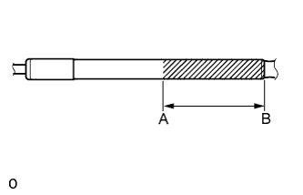

HOOD SUPPORT > DISPOSAL |
| 1. DISPOSE OF HOOD SUPPORT ASSEMBLY |
Horizontally hold the hood support in a vise with the piston rod pulled out.
|  |
Wear safety glasses. Gradually make a cut between A and B shown in the illustration using a metal saw to release the gas.
| Area | Specified Condition |
| A - B | 50 mm (1.97 in.) |